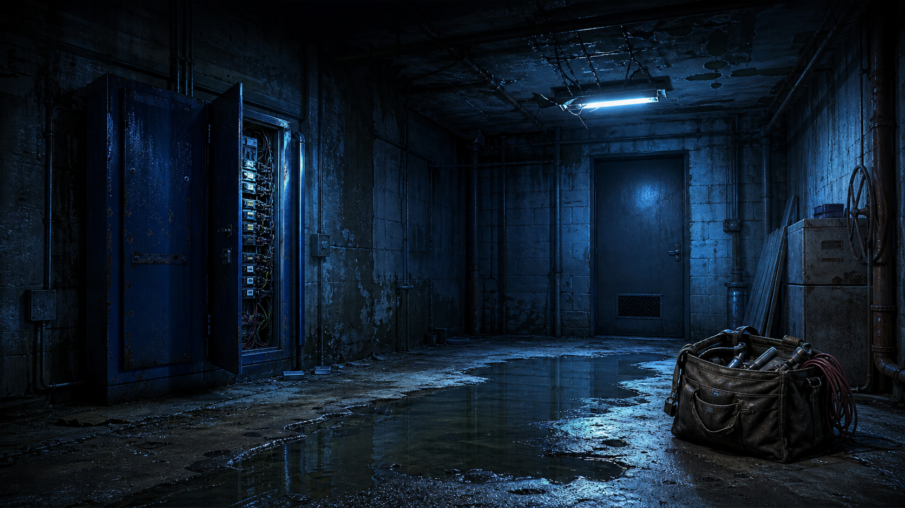

HTML · CSS · JavaScript
별도의 무거운 게임 엔진 없이 모바일 브라우저에서도 실행되는 단계형 미스터리 UI로 제작했습니다.
이 게임은 피의게임 X에서 느낀 추리와 긴장감의 재미를 직접 구현해 보고 싶어, 팬의 마음으로 AI와 함께 바이브코딩한 비공식 팬 프로젝트입니다. 게임뿐 아니라 기획과 개발 과정도 함께 나누고자 합니다.

화면 구성부터 AI 심문, 동료 의견, 기록 저장과 모바일 대응까지 실제 게임에 사용된 소스를 모두 공개합니다. 누구나 이 개발 소스를 바탕으로 새로운 사건과 테마를 자신만의 바이브코딩 방식으로 만들어 보세요.
별도의 무거운 게임 엔진 없이 모바일 브라우저에서도 실행되는 단계형 미스터리 UI로 제작했습니다.
공개된 단서와 질문 기록을 바탕으로 집사의 답변과 동료 의견을 생성하도록 규칙 중심 프롬프트를 구성했습니다.
Google 로그인과 Firestore를 사용해 완료 시간, 질문 횟수, 정답 평가를 저장하고 같은 사건의 중복 기록을 관리합니다.
기획, 코딩, 디버깅, 문서 작성과 이미지 제작까지 GPT와 대화하며 완성했습니다. 코드를 잘 몰라도 아이디어와 공개 소스로 새로운 테마에 도전할 수 있습니다.
사진 속 단서를 조사하고, 동료와 의견을 나누고, 집사에게 질문하며 사건의 전말을 완성하는 AI 미스터리 게임입니다. 네 번의 라운드 동안 새 사진과 단서가 공개되고, 질문과 힌트를 사용할수록 개인 시간이 늘어납니다.
Water Castle Games가 만들고 운영하는 다른 프로젝트도 만나보세요.
아들을 훈련시키고 커리어를 성장시켜 세계적인 축구 선수로 키우는 모바일 육성 타이쿤 게임입니다.
Google Play에서 보기 →업데이트, 시행착오, 다음 게임에 대한 이야기를 확인할 수 있습니다.
@watercastlegames